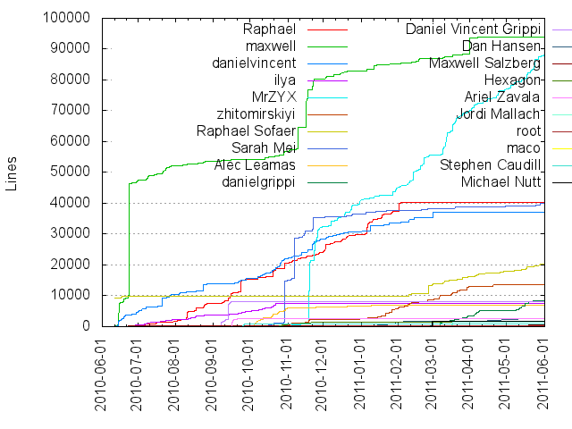

Authors
| Author | Commits (%) | + lines | - lines | First commit | Last commit | Age | Active days | # by commits |
|---|
| Raphael | 1435 (19.47%) | 40299 | 74459 | 2010-06-22 | 2011-02-03 | 226 days, 1:26:35 | 148 | 1 |
| maxwell | 1238 (16.80%) | 93901 | 43630 | 2010-06-12 | 2011-04-18 | 310 days, 3:51:27 | 175 | 2 |
| danielvincent | 914 (12.40%) | 37127 | 27405 | 2010-06-12 | 2011-03-01 | 261 days, 23:12:29 | 162 | 3 |
| ilya | 585 (7.94%) | 7444 | 4610 | 2010-06-14 | 2010-10-24 | 131 days, 21:44:09 | 73 | 4 |
| MrZYX | 535 (7.26%) | 88206 | 44327 | 2010-09-18 | 2011-06-01 | 256 days, 0:56:24 | 169 | 5 |
| zhitomirskiyi | 449 (6.09%) | 13546 | 7667 | 2010-10-24 | 2011-05-09 | 197 days, 0:14:33 | 101 | 6 |
| Raphael Sofaer | 377 (5.11%) | 20269 | 8011 | 2010-06-11 | 2011-06-01 | 355 days, 0:08:16 | 82 | 7 |
| Sarah Mei | 335 (4.54%) | 40073 | 34250 | 2010-09-25 | 2011-05-29 | 245 days, 19:33:23 | 93 | 8 |
| Alec Leamas | 249 (3.38%) | 6936 | 5066 | 2010-09-20 | 2011-01-10 | 112 days, 8:23:41 | 61 | 9 |
| danielgrippi | 187 (2.54%) | 8335 | 6008 | 2011-03-03 | 2011-05-25 | 82 days, 18:44:26 | 44 | 10 |
| Daniel Vincent Grippi | 147 (1.99%) | 7984 | 4368 | 2010-08-29 | 2010-09-16 | 17 days, 8:46:00 | 13 | 11 |
| Dan Hansen | 108 (1.47%) | 2632 | 1820 | 2010-11-25 | 2011-05-31 | 186 days, 17:58:50 | 35 | 12 |
| Maxwell Salzberg | 59 (0.80%) | 717 | 346 | 2010-06-12 | 2011-05-25 | 347 days, 11:58:00 | 32 | 13 |
| Hexagon | 50 (0.68%) | 1415 | 974 | 2010-10-25 | 2010-12-07 | 43 days, 1:08:47 | 19 | 14 |
| Ariel Zavala | 50 (0.68%) | 2468 | 1567 | 2010-09-16 | 2010-09-19 | 2 days, 23:29:26 | 4 | 15 |
| Jordi Mallach | 47 (0.64%) | 1562 | 1231 | 2011-03-11 | 2011-05-26 | 76 days, 0:18:11 | 16 | 16 |
| root | 24 (0.33%) | 269 | 108 | 2010-07-06 | 2011-01-15 | 192 days, 19:05:59 | 9 | 17 |
| maco | 20 (0.27%) | 74 | 46 | 2010-09-16 | 2010-09-28 | 11 days, 8:06:17 | 7 | 18 |
| Stephen Caudill | 19 (0.26%) | 776 | 598 | 2010-09-15 | 2010-09-26 | 10 days, 17:24:45 | 4 | 19 |
| Michael Nutt | 16 (0.22%) | 1786 | 1633 | 2010-09-15 | 2011-03-10 | 175 days, 21:30:35 | 7 | 20 |
These didn't make it to the top: livefromthemoon@gmail.com, Paweł Wilk, Jonne Hass, Dorian, Anish A, Nick van der Burgt, OhaiBBQ, Michael Sofaer and Raphael Sofaer, Dan Hansen & Sarah Mei, archi, Michael Sofaer, Michael Kaeufl, hemanth, Guido Serra aka Zeph, Arzumy MD, Jamie Wilkinson, Thomas R. Koll, Maël Soucaze, Felix Gruber, behrooz shabani (everplays), Jerin Philip, mishudark, Volkan Unsal, Philip Champon, Marcin Karpezo, Ilya Zhitomirskiy, Etienne Membrives, David Morley, Dan Goldenberg, maelsoucaze, lfortin, Uiri, Shawn McGuire, Pistos, Guillermo, Daniel Grippi & Raphael Sofaer, Claudius Coenen, Andreas Schneider, patcito, denschub, UserAd, MrBison, Mike Sofaer, Raphael Sofaer & Sarah Mei, Mark Schmale, J David Eisenberg, Gonzalo Rodriguez, Derrick Camerino, Daniele Di Sarli, Crimer, sennewood, rmaskey, kook, Thomas Krehbiel, Rick Waldron, Nicolas Berens, Michael Fellinger, Kashif Rasul, Joseph Method, Jairo Diaz, Himanshu Chhetri, Gabriel Gilder, Dennis Schubert, Angjoo, sentientwaffle, mousey, masterdot, cyberkov, Yaron Shahrabani, William Theaker, Stoyan Gaydarov, Steve Conover, Sebastian, Sarah Allen, Ritchie Wilson, Paul Rosania, Patrick Aljord, Mikhail Zubrov, Kiran Soumya, Joe Davis, Jesse Kriss, Jeffry Degrande, Iuri Kothe, Diaspora, DenSchub, Daniel Thomas, Daniel Grippi, Dan Cirnat, Curtis J Schofield, Alexandre DE DOMMELIN, ’Jarkko, uiri, romanov, moziz, minilibra, michael.scheffler, mblog, koo5, hemanth.hm, gattytto, cryptix, cori schlegel, adonix, ZTurtleMan, Yuval Adam, Vytautas Jakutis, Vincent Batts, Vikram Verma, Tiago Bastos, TJ Peden, T-Moe, Sven Kräuter, Stig Johan Berggren, Steve Klabnik, Steve 'Ashcrow' Milner, Shane Becker, Robin Nilsson, Raphael Jedidiah Sofaer, Pedro Silva, Otacon, Miguel Diaz, Matt Baker, Laurent, Justin Wienckowski, Julian Osman, Josh Lubaway, John Yani, Johan Brinch, Jesse B. Hannah, Jeff Dickey & Michael Sofaer, Jan, Jakob Kramer, J. Pablo Fernández, Hylke Bons, Federico Brubacher, Evan Tatarka, Ethan Bruning, Don Park, Diógenes, Darkmagister, Danillo César, Chiggins, Arnaud Delcasse, Aria Stewart, Adrián Chaves Fernández (Gallaecio), Adam McDonald, Abdulaziz Al-Shetwi, =
Only top 20 authors shown
Only top 20 authors shown
| Month | Author | Commits (%) | Next top 5 | Number of authors |
|---|
| 2011-06 | Raphael Sofaer | 3 (75.00% of 4) | MrZYX | 2 |
| 2011-05 | MrZYX | 92 (24.93% of 369) | danielgrippi, Raphael Sofaer, Sarah Mei, Maxwell Salzberg, Anish A | 24 |
| 2011-04 | MrZYX | 85 (35.56% of 239) | Raphael Sofaer, danielgrippi, Dan Hansen, maxwell, behrooz shabani (everplays) | 16 |
| 2011-03 | Raphael Sofaer | 122 (20.78% of 587) | MrZYX, danielgrippi, maxwell, zhitomirskiyi, Jordi Mallach | 16 |
| 2011-02 | MrZYX | 89 (21.24% of 419) | Raphael Sofaer, zhitomirskiyi, maxwell, Sarah Mei, danielvincent | 16 |
| 2011-01 | Raphael | 170 (26.32% of 646) | zhitomirskiyi, maxwell, danielvincent, Dan Hansen, Sarah Mei | 20 |
| 2010-12 | maxwell | 155 (24.80% of 625) | Raphael, danielvincent, MrZYX, Sarah Mei, Alec Leamas | 32 |
| 2010-11 | Raphael | 213 (24.85% of 857) | maxwell, danielvincent, zhitomirskiyi, Sarah Mei, MrZYX | 32 |
| 2010-10 | danielvincent | 224 (20.90% of 1072) | Raphael, Alec Leamas, ilya, maxwell, Sarah Mei | 33 |
| 2010-09 | Raphael | 196 (21.08% of 930) | Daniel Vincent Grippi, danielvincent, ilya, maxwell, Ariel Zavala | 83 |
| 2010-08 | Raphael | 361 (48.78% of 740) | ilya, maxwell, danielvincent, Daniel Grippi & Raphael Sofaer, Daniel Vincent Grippi | 9 |
| 2010-07 | maxwell | 208 (36.43% of 571) | ilya, Raphael, danielvincent, root, Diaspora | 7 |
| 2010-06 | maxwell | 138 (44.23% of 312) | danielvincent, ilya, Raphael Sofaer, Raphael, Maxwell Salzberg | 6 |
| Year | Author | Commits (%) | Next top 5 | Number of authors |
|---|
| 2011 | MrZYX | 424 (18.73% of 2264) | Raphael Sofaer, zhitomirskiyi, maxwell, danielgrippi, Raphael | 51 |
| 2010 | Raphael | 1249 (24.46% of 5107) | maxwell, danielvincent, ilya, Alec Leamas, Sarah Mei | 137 |
| Domains | Total (%) |
|---|
| joindiaspora.com | 3699 (50.18%) |
|---|
| gmail.com | 2584 (35.06%) |
|---|
| laptop.(none) | 588 (7.98%) |
|---|
| SPEEDRACER.local | 136 (1.85%) |
|---|
| softcatala.org | 47 (0.64%) |
|---|
| ubuntu.com | 20 (0.27%) |
|---|
| nyu.edu | 20 (0.27%) |
|---|
| nuttnet.net | 16 (0.22%) |
|---|
| gnu.org | 15 (0.20%) |
|---|
| speedracer.(none) | 11 (0.15%) |
|---|